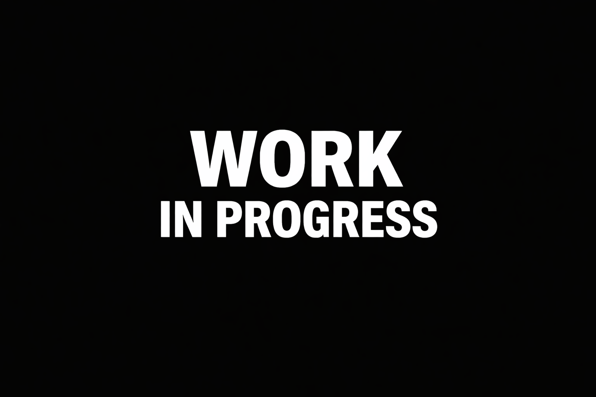

Goal
Build a stylized robot that feels expressive and reactive through shader-driven animation rather than bones or a traditional rig.
Tech Art • Shader Graph • Unity
A procedural robot animation system built with Shader Graph and C#. The goal was to create expressive movement, state-based behavior, and readable visual feedback without relying on a traditional rig.
This project explores how far procedural animation can be pushed using mesh masks, Shader Graph, and lightweight gameplay code.
Build a stylized robot that feels expressive and reactive through shader-driven animation rather than bones or a traditional rig.
Procedural wheel motion, shell turning, scan behavior, antenna motion, emissive state feedback, and readable movement logic.
Unity, Shader Graph, C#, NavMeshAgent, Material Property Blocks, vertex colors, and emissive textures.
The robot is split into parts using vertex colors, allowing different sections of the mesh to react in unique ways.
Vertex color channels were used to isolate different parts of the robot. This made it possible to animate multiple sections of the same mesh independently inside Shader Graph.

Each animated part was rotated around its own pivot using Rotate About Axis. Instead of one animation clip, the robot is driven by signals such as movement, turning, scanning, and wheel phase.

C# was used to calculate stable control signals and pass them into the shader with Material Property Blocks. This made it possible to separate game logic from visual response.
The robot uses simple readable states that influence both behavior and visual presentation.
The robot moves between patrol points, with optional wandering around each stop to avoid overly straight and mechanical movement.
When idle, the robot pauses, scans the environment, and transitions into a more alert visual state. This was designed to make the AI feel more aware and less robotic in a simple sense.
In chase mode, movement becomes more direct and the emissive state shifts to communicate danger and urgency more clearly.
A large part of the project was solving the friction between AI navigation, procedural animation, and stable shader inputs.
Computing wheel rotation directly in the shader caused instability when movement values changed rapidly. The final solution was to integrate wheel angles in C# and send the accumulated phase to the shader.
Combining move and turn directly often created spikes or unnatural speed boosts. This was addressed by introducing gating, smoothing, and better separation between movement intent and actual motion.
Early versions of the scan state triggered too eagerly. The behavior was refined by using actual velocity checks, scan timing, cooldowns, and explicit stop logic during scan.
Patrol, scan, and chase states were connected to the emissive system through smoothly blended weights, allowing the same robot to feel calm, aware, or aggressive depending on context.
This project became a strong lesson in how technical art works best when code and shaders each handle the right responsibilities.
The biggest takeaway was that procedural animation is not only about creating motion — it is about feeding the right kind of signal into the right part of the system.
C# handled timing, state, wheel phase, and stable behavior signals, while Shader Graph handled deformation, masking, layering, and visual character.
Placeholder images for now — replace these with screenshots, graph captures, or GIFs later.